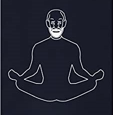

O Fazer Terapia!
A psicanálise é um método terapêutico desenvolvido pelo médico austríaco Sigmund Freud, no final do século
XIX. Sua teoria psicanalítica sistematizou os conhecimentos sobre a psique humana. Ela é uma das
abordagens da psicoterapia.
O objeto de estudo da psicanálise é o inconsciente. Freud acreditava que ao tomar consciência dos pensamentos subconscientes, o paciente podia liberar traumas, emoções e experiências reprimidas e, por meio do autoconhecimento, aprender a lidar melhor com si e com os outros, se curando de transtornos mentais, neuroses e psicoses. ...
O objeto de estudo da psicanálise é o inconsciente. Freud acreditava que ao tomar consciência dos pensamentos subconscientes, o paciente podia liberar traumas, emoções e experiências reprimidas e, por meio do autoconhecimento, aprender a lidar melhor com si e com os outros, se curando de transtornos mentais, neuroses e psicoses. ...
Ler mais → Posted on October,9, 2022
Qual a diferença entre o psicanalista, o psicólogo e o psiquiatra?
O psicanalista é o profissional que pode ser formado em outras áreas do ensino superior, além da
Psicologia, e que se especializa em psicanálise, aplicando-a em todas as situações em que irá atuar
...
Ler mais →
Posted on November, 11, 2022

Ler mais →
Posted on May 19, 2023
Psicanálise e Yogaterapia!
Tratamento de psicoterapia é o que procura sanear (tornar sã) a mente, fundamentando-se na tese de que as
condições de desequilíbrio, desarmonia, impureza e inquietude mentais são responsáveis pelos transtornos
físicos. É tratamento comprovadamente eficaz. Sua eficácia demonstra a solidez da tese.
As escolas de psicologia do inconsciente, principalmente a psicanálise e a auto-análise, têm sido as que melhor atendem aos fins psicoterápicos. Têm sido as mais utilizadas pelos especialistas de todo o mundo ...
As escolas de psicologia do inconsciente, principalmente a psicanálise e a auto-análise, têm sido as que melhor atendem aos fins psicoterápicos. Têm sido as mais utilizadas pelos especialistas de todo o mundo ...
Ler mais →
Posted on May 19, 2023
Carla Mendonça Pedrina
Psicanalista
"Há Dezoito anos atrás, a Psicanálise ampliou um caminho chamado busca. Reconheci-me como buscadora por
anos; muitos cursos, estudos, formações, escolas de autoconhecimento, investigações e práticas ao longo da
trajetória!
E foi em um desses momentos de busca, residindo na Europa, trabalhando com atendimento clínico e investigando mais uma forma de poder contribuir num processo de cura e auto-cura consequentemente, que realizando um retiro, mais uma vez à buscar respostas para tantos questinamentos, tive naquele momento, uma experiência de profundo silêncio! Compreendi que toda a busca de curas psíquicas e entendimento intelectual estavam a serviço da rendição da idéia de um eu buscador. Sim! Um paradoxo! Acreditamos que somos alguém que precisa chegar à "algum lugar", carregamos a necessidade constante de aprimoramento; de ter algo para "modificar" e passamos anos buscando cura e entendimento em torno de "tudo", até percebermos que esse "eu buscador" é apenas e tão somente uma idéia.
É a perfeição do caminho sem caminho.
A partir deste olhar não-dual, claramente que todos os caminhos e estudos terapêuticos podem servir como ponte à essa rendição, mas não mais como meios de aprimorar ou aperfeiçoar um eu ilusório.
Toda a busca pessoal levou-me a transformar a necessidade do "algo a ser feito", "a ser corrigido" ou "aprimorado", esse elemento faltante que nos acompanha, de um dia "se iluminar ou despertar", em apenas um senso de pessoa, alguém a se dissolver no todo!
Pude realmente experimentar a liberdade de apenas Ser!
Claro, podemos sim, na caminhada, ir nos aprimorando, curando, investigando, autoanalisando e nos transformando, mas além da persona, em unidade, o presente é o melhor presente! O Ser é a única realidade eterna.
Hoje, exerço a Psicanálise, o Yoga e as Terapias complementares como jóias preciosas no caminho do autoconhecimento e da cura, integrando todos os saberes como presentes para que haja sempre a abertura à realidade e o poder da presença do Agora Eterno!
E foi em um desses momentos de busca, residindo na Europa, trabalhando com atendimento clínico e investigando mais uma forma de poder contribuir num processo de cura e auto-cura consequentemente, que realizando um retiro, mais uma vez à buscar respostas para tantos questinamentos, tive naquele momento, uma experiência de profundo silêncio! Compreendi que toda a busca de curas psíquicas e entendimento intelectual estavam a serviço da rendição da idéia de um eu buscador. Sim! Um paradoxo! Acreditamos que somos alguém que precisa chegar à "algum lugar", carregamos a necessidade constante de aprimoramento; de ter algo para "modificar" e passamos anos buscando cura e entendimento em torno de "tudo", até percebermos que esse "eu buscador" é apenas e tão somente uma idéia.
É a perfeição do caminho sem caminho.
A partir deste olhar não-dual, claramente que todos os caminhos e estudos terapêuticos podem servir como ponte à essa rendição, mas não mais como meios de aprimorar ou aperfeiçoar um eu ilusório.
Toda a busca pessoal levou-me a transformar a necessidade do "algo a ser feito", "a ser corrigido" ou "aprimorado", esse elemento faltante que nos acompanha, de um dia "se iluminar ou despertar", em apenas um senso de pessoa, alguém a se dissolver no todo!
Pude realmente experimentar a liberdade de apenas Ser!
Claro, podemos sim, na caminhada, ir nos aprimorando, curando, investigando, autoanalisando e nos transformando, mas além da persona, em unidade, o presente é o melhor presente! O Ser é a única realidade eterna.
Hoje, exerço a Psicanálise, o Yoga e as Terapias complementares como jóias preciosas no caminho do autoconhecimento e da cura, integrando todos os saberes como presentes para que haja sempre a abertura à realidade e o poder da presença do Agora Eterno!